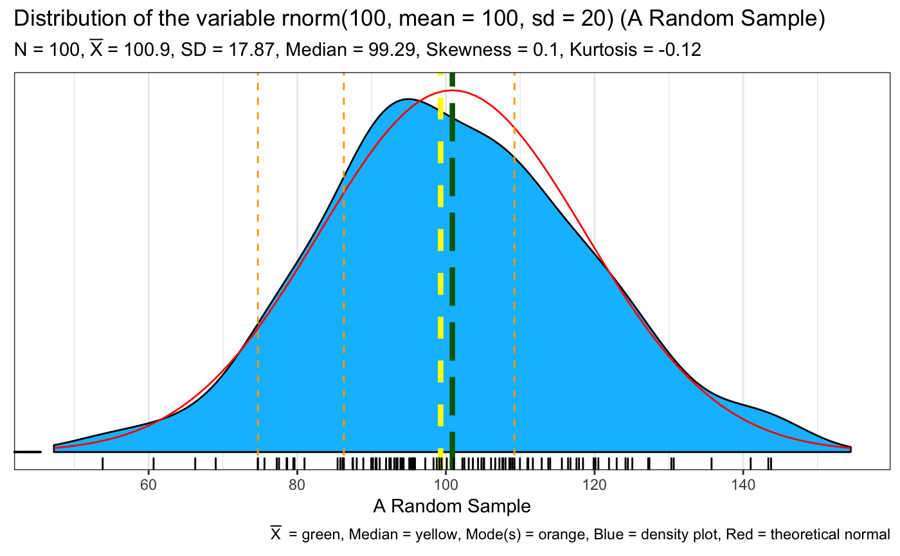
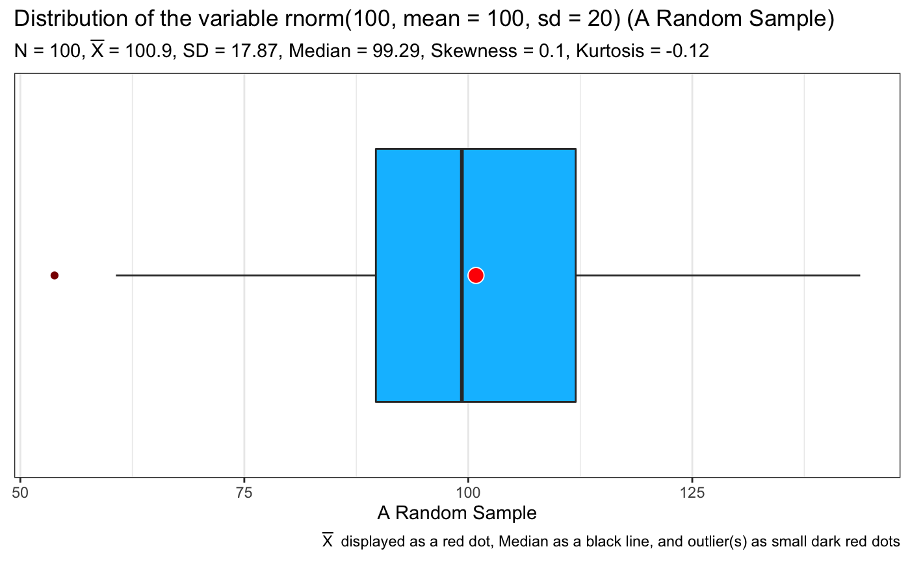
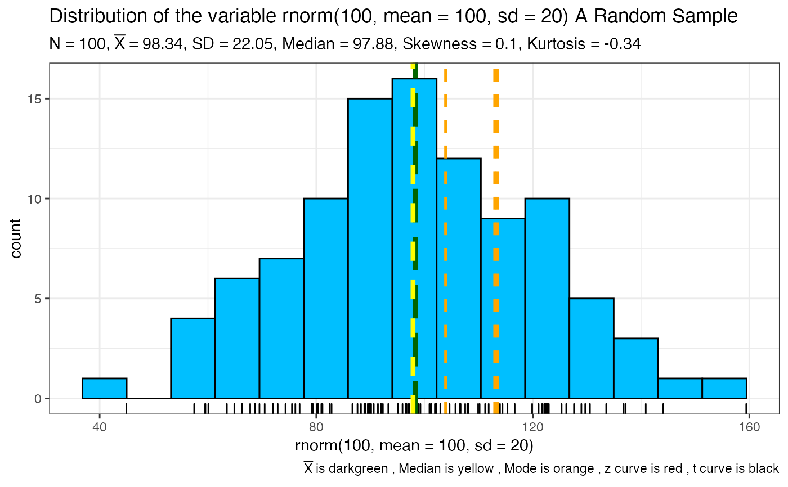
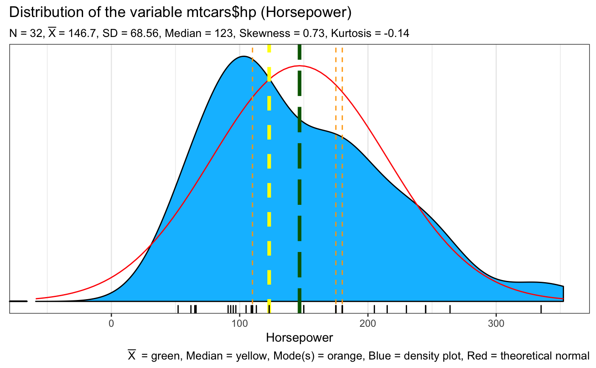
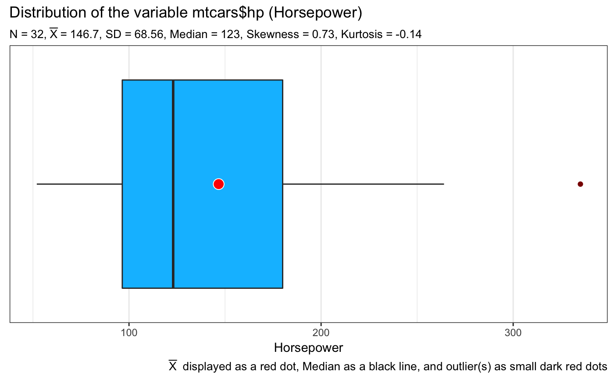
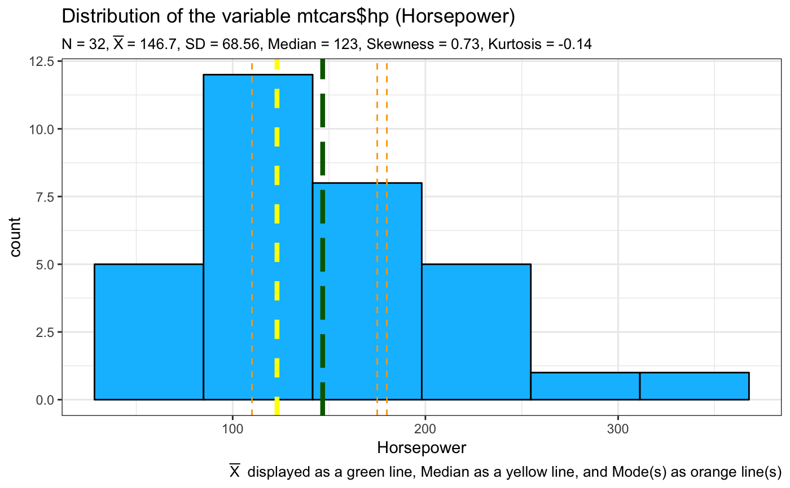

This function takes a vector of numeric data and returns one or more ggplot2 plots that help you visualize the data
SeeDist( qqq, numbins = 0, whatvar = "Unspecified", whatplots = c("d", "b", "h") )
| qqq | the data to be visualized must be numeric. |
|---|---|
| numbins | the number of bins to use for any plots that bin. If nothing is
specified the function will calculate a rational number using Freedman-Diaconis
via the |
| whatvar | additional contextual information about the variable as a string such as "Miles Per Gallon" |
| whatplots | what type of plots? The default is whatplots = c("d","b","h") for a density, a boxplot, and a histogram |
from 1 to 3 plots depending on what the user specifies as well as a base R summary printed to the console
If the data has more than 3 modal values only the first three of them are plotted. The rest are ignored and the user is warned on the console.
Missing values are removed with a warning to the user
nclass
#> Warning: There are 100 modal values displaying just the first 3#> Min. 1st Qu. Median Mean 3rd Qu. Max. #> 44.93 81.13 97.88 98.34 113.25 159.43#> Min. 1st Qu. Median Mean 3rd Qu. Max. #> 52.0 96.5 123.0 146.7 180.0 335.0SeeDist(iris$Sepal.Length, whatvar = "Sepal Length", whatplots = "d")#> Min. 1st Qu. Median Mean 3rd Qu. Max. #> 4.300 5.100 5.800 5.843 6.400 7.900